一个人从东德派到西伯利亚工作，他知道自己的信件都会被人监看，因此他告诉朋友：「我们定一个暗号，假如我的信件用蓝墨水写，这里说的都是真话；如果我用红墨水，说的都是假话」。
一个月后他朋友收到他第一封信：「这儿一切都美好，商店里塞满了好吃的食品，剧院播放着来自西方的好电影，住宅又大又豪华,唯一买不到的东西就是红墨水」。
这就是我们的生活模式，我们拥有一切想要的自由，但却少了红墨水：能够清楚表达我们「不自由」的语言。
——齐泽克
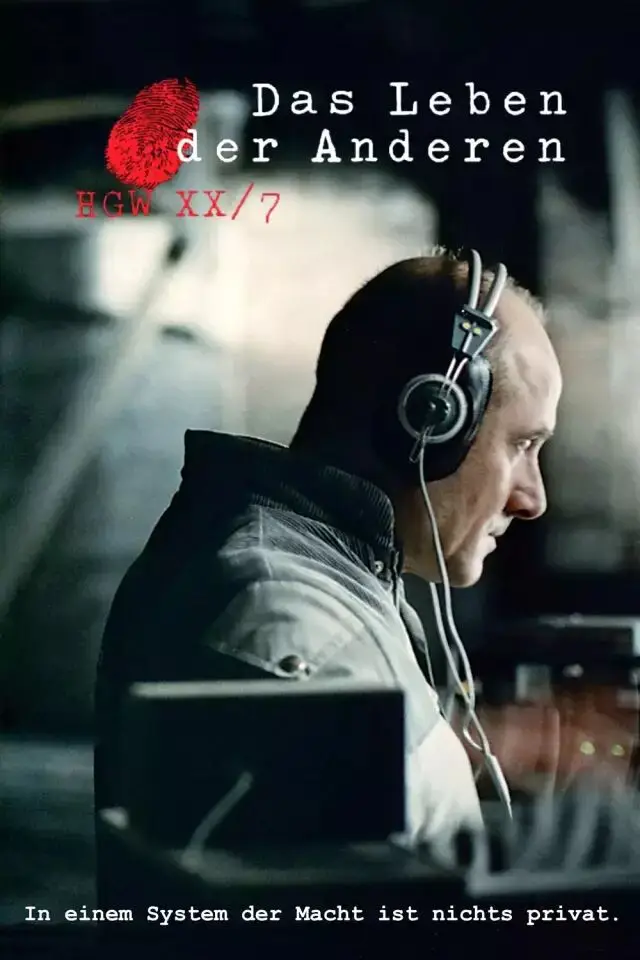
正文共计3600字左右
预计阅读时间5min
打开音乐阅读更佳
转载请在后台回复“授权”

-01-
1984年，东柏林，一个人逃往西柏林。
随后，史塔西（国家安全部，负责搜集情报、监听监视人民，高峰时期，每6.5个东德公民中，便有一人为史塔西工作）介入调查，抓捕了他的邻居。
秘密警察魏斯曼对其进行了审讯，而这位“犯人”始终坚称自己并不知情。
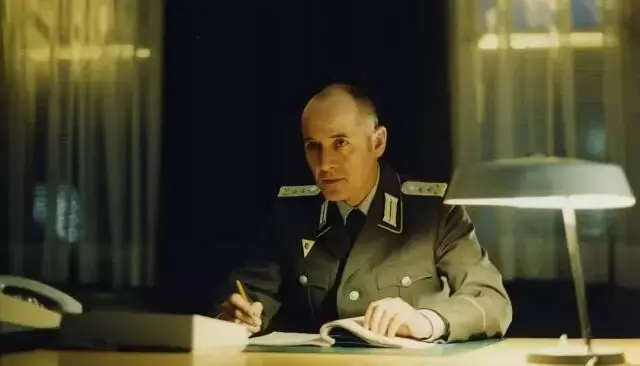
于是，魏斯曼暂停了审讯，待“犯人”不眠不休40个小时后，他又重新开始了审讯。
“犯人”红着眼向魏斯曼哀求，可不可以睡一下。
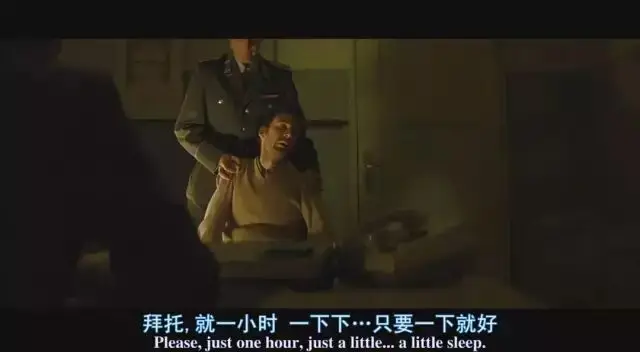
魏斯曼冷峻地拒绝了他的要求，继续向其施压审讯，因为魏斯曼清楚，如果他真的无辜，那么经过长时间非人道对待后，一定会暴跳如雷。
而他却一反常态，保持沉默甚至哀求，这只能说明他心里有“鬼”。
在魏斯曼的审讯下，“犯人”的精神几近奔溃，可他的供词却和之前一摸一样，甚至一字不差。
魏斯曼更加确信“犯人”在故意隐瞒事实，因为“撒谎的人一定会提前准备好说辞，一旦承受压力，便会重复这些说辞”。
现在剩下的就是推倒他心中最后的防线。
魏斯曼发出警告“如果你还不说出事实，那我们必须要抓捕你的妻子，而你的两个孩子也将不得不送往收容所，你希望这样么？”
“犯人”痛哭流涕，表情极其痛苦。
最终，“犯人”终于向魏斯曼坦白，供出了另一个朋友的名字！
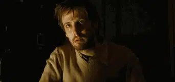
这就是奥斯卡电影《窃听风暴》的开场。
短短六分钟，不仅交代了那个“妻子监视丈夫、学生监视教授、儿女监视父母、情人相互监视、同事彼此监视”的恐怖时代。
更是刻画了一个心思缜密、冷酷敏锐的秘密警察形象，任何一个背离祖国原则的眼神和动作都难逃魏斯曼那双明澈犀利的眼睛。
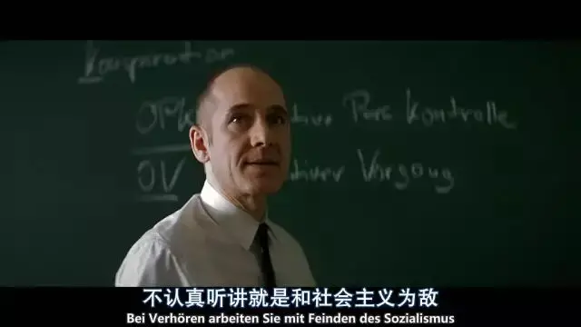
接着主剧情正式开始，曾是魏斯曼同学、如今是文化局局长的朋友忽然来访，并请魏斯曼观看一场话剧。
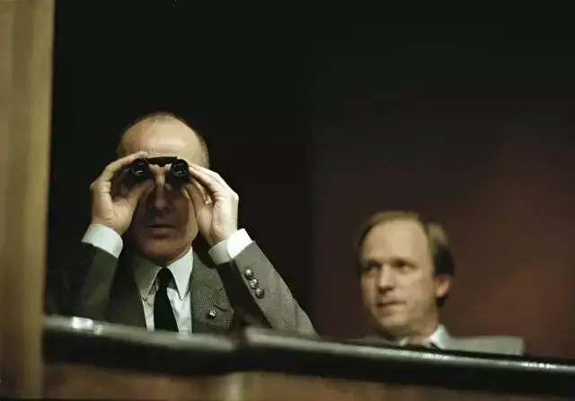
剧院中，魏斯曼被话剧女主演克里斯塔吸引，她的明眸中跳跃着一种难以名状的魅力，一种不属于东德体制的自由之光。
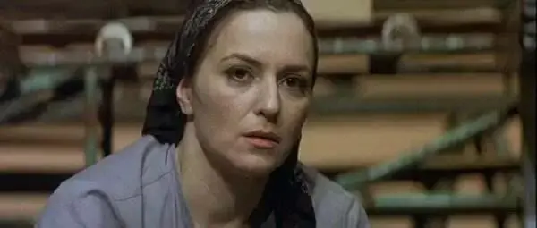
而坐在一旁神情黯然、不苟言笑的剧作家德瑞曼同样引起了魏斯曼的注意。
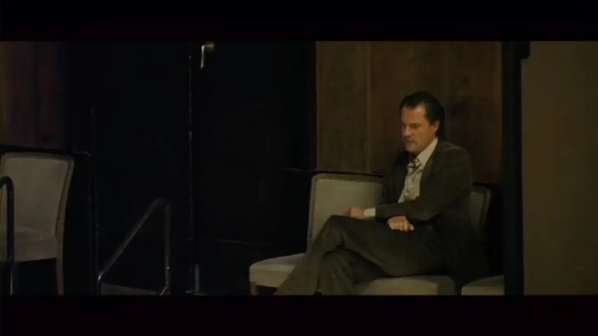
凭直觉，魏斯曼知道这对夫妻并不是纯正的社会主义艺术家。
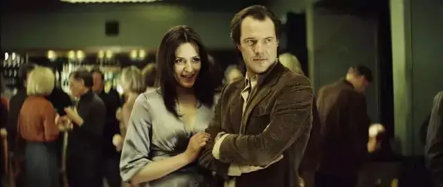
他主动请缨要监听克里斯塔和德瑞曼，可令他没有想到的是，这次监听将彻底改变他自己的命运......
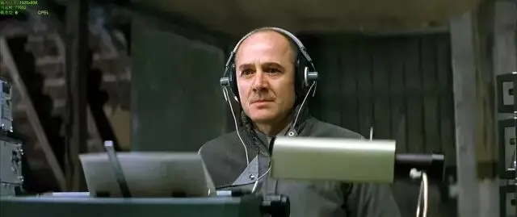
-02-
这是一部极富感染力的经典之作，细节刻画令人惊叹，氛围营造精准真实。
而最动人的是在冷彻入骨的世界中燃起了一把“人性和良知”的火焰。
一个“杀手”动了情。
一个独裁集团的刽子手因为收听“敌台”而倒戈。
一个被洗了脑的“战狼”回归成为正常人，甚至变成一个好人。
秘密警察魏斯曼转变的过程令人心碎，也让人无比感动。
第一次的变化发生在克里斯塔回家的过程，她在车上被位高权重的文化部部长野蛮蹂躏。
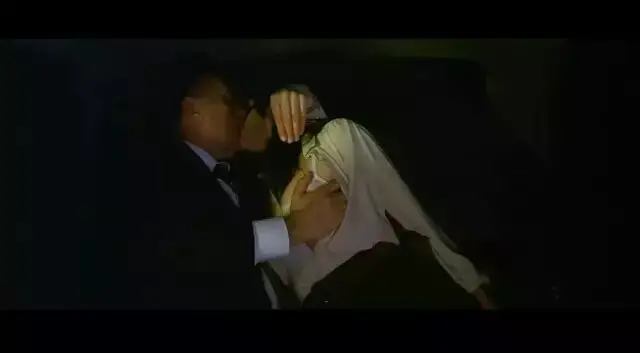
原来，文化部部长以克里斯塔的艺术前途为要挟而将其逼奸，并让她监视自己的丈夫。
克里斯坦从身体和心灵上都背叛了自己深爱的丈夫，她也因此痛苦不已，不得不服用抗抑郁的药物才能维持正常的生活。
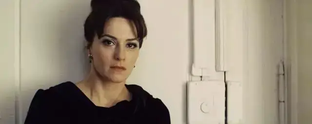
当魏斯曼通过监控录像发现这一事实后，他默默说了一句“面对残酷现实的时候到了”。
然后故意惊动德瑞曼让他发现了这个令所有男人蒙羞、绝望的事实：自己的妻子成为了权贵床上的“妓女”。
魏斯曼的这个举动可以说是相当邪恶的，他从心底里蔑视这两个文青之间的爱情，他要用这个残酷的事实挫败德瑞曼身上那点所谓艺术家的尊严。
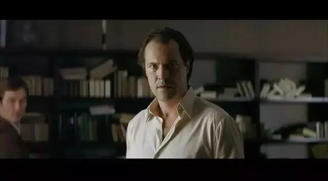
魏斯曼都能预想到接下来的事情，两个人因此大吵一架，甚至他们的婚姻会走到尽头。
可令魏斯曼没有想到的是，德瑞曼是很愤怒、绝望，但他并没有向克里斯塔爆发。
而克里斯塔回到家后立马冲进浴室，希望用水能够“洗净”自己身上的“肮脏”和“侮辱”。
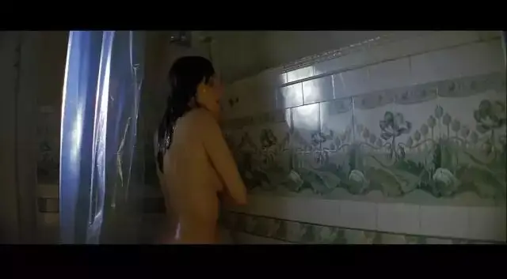
洗完澡后，她像一个柔弱的婴儿一样蜷缩在床上，对德瑞曼说“抱紧我就好”。
而德瑞曼强忍着内心的苦楚紧紧地抱着克里斯塔，给她温暖和安慰。
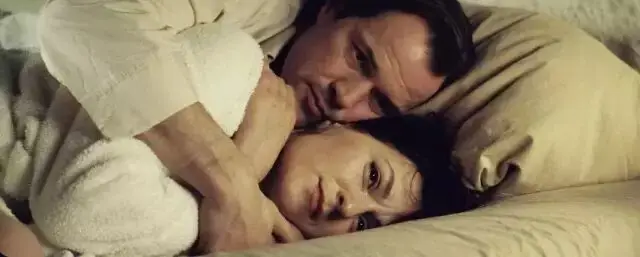
这一刻，任何一个还有一丝人性尚存的人都能感受到他们的无助和那点虽然微弱但无比温暖的真情。
魏斯曼的心也被触动了，他通过窃听设备感受着克里斯塔的呼吸从颤抖变为平静、从急促变为舒缓，他像德瑞曼那样“拥抱”着可怜的克里斯塔，充满了温柔和祝福。
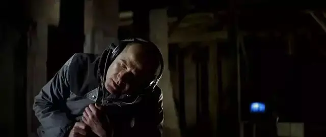
不知不觉中，一颗冰冷的心逐渐恢复了知觉。
一个智商极高、冷酷无情、独身居住的秘密警察忽然产生了一种新的渴望， 察觉到自己的生活是那样的贫瘠和没有激情。
当晚魏斯曼回到家中招妓，像一个小孩一样好奇、贪婪地拥抱着女人，甚至请求妓女多陪自己一会儿。
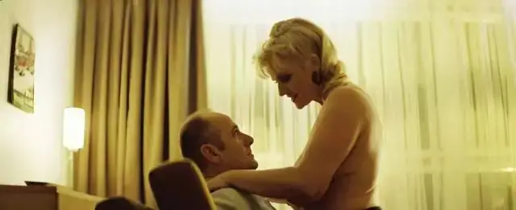
第二天，魏斯曼偷偷潜入德瑞曼的房间，偷走了一本布莱希特作品集，他躺在沙发上，读着一句句美丽的诗句，他的双眸绽放着一种仿佛走到一个新世界的光亮和欣喜。
初秋的九月每一天都是忧郁的
那些笔直的小树向着天空
就像爱情一样茁壮的生长着
头顶是湛蓝的天空
天空飘着一朵棉花般洁白的云彩
而只要你心中有信念
它将永远不会离你而去
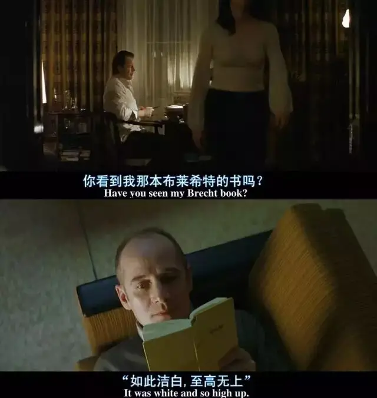
魏斯曼看待克里斯塔和德瑞曼从一种敌对的眼光变为一种充满同情、尊重和好奇的眼光。
接着第二次的变化来到。
魏斯曼通过监听德瑞曼的电话得知，一个良心导演因为上了黑名单而无戏可导，最终绝望自杀。
这位导演是德瑞曼的知己，也是他一直竭力帮助和维护的人。
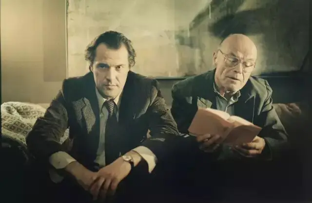
这个消息让德瑞曼极度震惊和悲伤，以至于半天说不出一句话来。
失魂落魄的德瑞曼来到钢琴前，开始弹奏导演送给他的贝多芬的《热情奏鸣曲》。
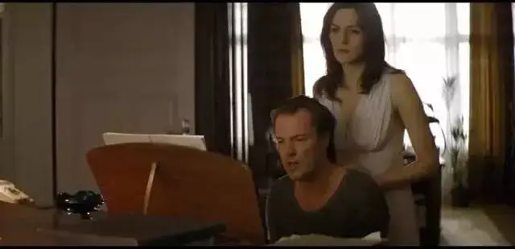
一股真挚的情感瞬间从琴键上喷涌而出，听到这样的音乐，魏斯曼内心汹涌澎湃，不禁潸然泪下。
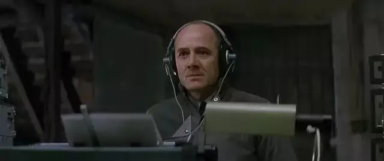
弹奏完音乐后，德瑞曼问克里斯塔“听了这段音乐的人，我指的是真的听进去的人，还会是坏人吗”
这个拷问同样也留给了魏斯曼。
-03-
电影讲述的故事可以看做是权贵针对弱者的一场狩猎，作为猎物的德瑞曼和克里斯塔身不由己、言不由衷，身体和思想被强暴还要默不作声。
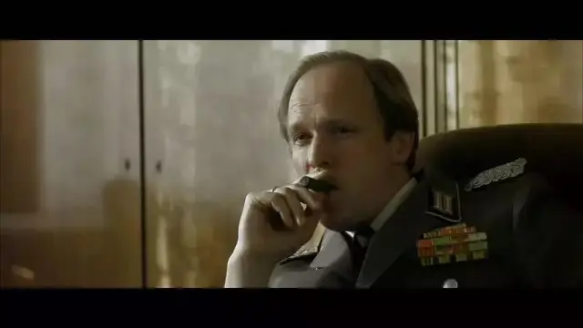
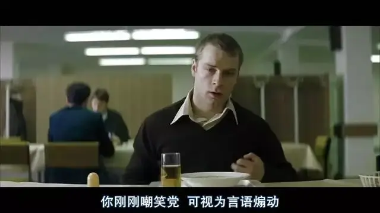
而作为权贵爪牙的魏斯曼通过监听看到了主子的丑陋面貌和猎物的可怜处境。
作为爪牙，是敢于直面良心、甘心自断前程将枪口抬高一寸，还是灭绝人性继续坑害处于煎熬中的正直人？
电影给出的答案是光明的，魏斯曼从猎犬变成了牧羊犬，牺牲了自己后半生的前程默默守护了德瑞曼和克里斯塔。
魏斯曼虽从上尉被“贬”为一个卑微的送信人，但却成为了一个极富尊严和人格魅力的英雄。
那种守护良知的孤独令人无比震撼。
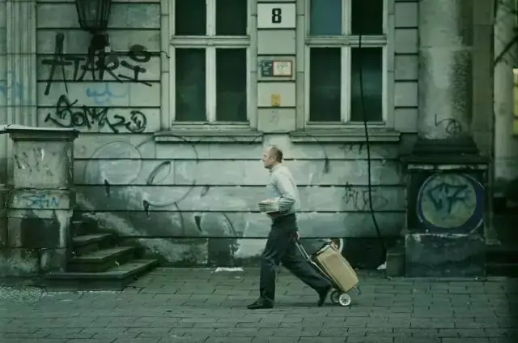
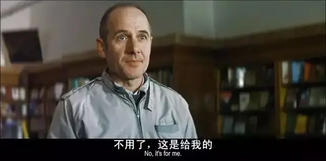
这部电影各方面堪称完美，唯一让人诟病的就是魏斯曼这个“好人”在真实的历史中是否真的存在，人性是否可以真的复苏，人们是否真的会在极端的恶面前仍然选择良知。
导演花了9年的时间筹备本片，在拍摄中获得了许多前东德人的支持，但前东德监狱博物馆的馆长却拒绝了导演在机关大楼拍摄的请求。
馆长给出的理由是：因为这个剧本不符合史实，整个东德历史，像魏斯曼这样“良心发现”的秘密警察，对不起，一个都没有！
馆长所说的也许是事实。
可不可否认的是，这部电影令无数人感动也是事实。
也就是说，人类从诞生起对于人性复苏的渴望、对于救赎的盼望从未改变。
任何一个相关的精彩故事一定会让我们的心灵感受到温暖和希望。
可虽有渴望，在实际的历史中，魏斯曼、德瑞曼是极少数，大多数人是软弱无力、充满挣扎甚至最后选择妥协的克里斯塔。
可尽管如此，我们却不能低估那份“渴望”和“弱者”所带来的力量。
毕竟，最先触动魏斯曼的是克里斯塔，给德瑞曼力量让他重拾信心的也是克里斯塔。
我们习惯关注强者，而"克里斯塔"们发出的微弱声音常常淹没在历史中不被人所知，可那些力量却是无法轻易忽视的。
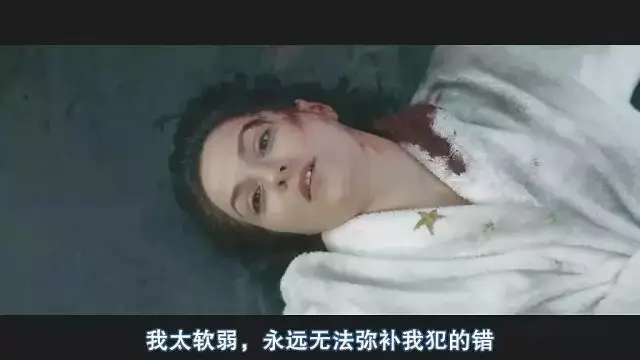
因此，冰冷的现实拥有让我们保持清醒的力量。
另一方面，永不停歇的的对于善良和救赎的渴望也一直在人类历史中传递着希望和力量。
这是两种真实，两种力量，连接着我们的形而上和形而下，贯通着永恒之盼望和当下之困境。
虽哀但不至于心死，柔弱却有力量，冰冷却不失希望，脚踏实地却不会低下仰望星空的头颅。
这就是《窃听风暴》散发出来的魅力。
新的一年中，六百击将会和大家继续聚焦佳作。
“看了这么好电影的人，我指的是真的看进去的人，还会是坏人吗”
这个答案我不知道，但可以肯定的是，如果看不到好的作品，我们连发现问题的能力也没有，更不要说还会有内心的挣扎。
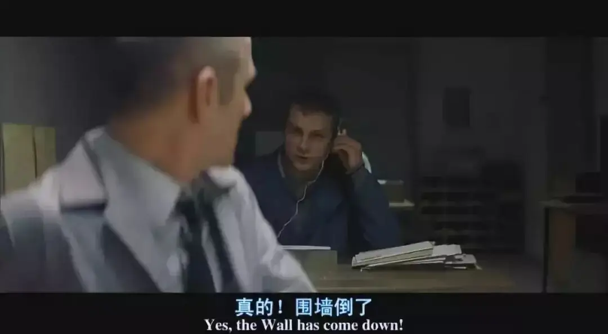
相关阅读
▼
（点击图片即可获取全文）

这里没有挑逗你眼目情欲的小鲜肉
也没有挑动你肉体情欲的段子
更没有膨胀你今生骄傲的鸡血
我们只在乎那些最质朴真诚的作品
在那里我们才能恢复真正的想象力
我们也坚信这才是我们真正需要的

ID:Six_hundred_hits
长按二维码，一键关注
【六百击】
-END-
电影评论
尽情分享朋友圈

苹果打赏通道
小提示：文末广告是腾讯配送广告，内容与本号无关，但您的每次点击（无需反复点）都会给平台带来几毛收益，欢迎您点击支持六百击。